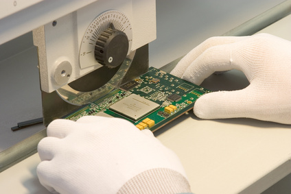
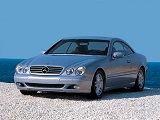
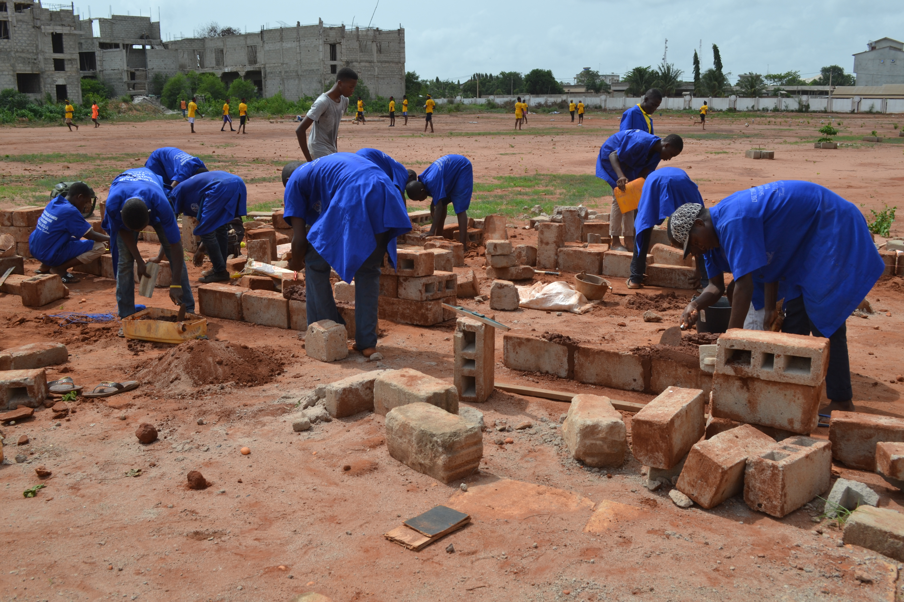
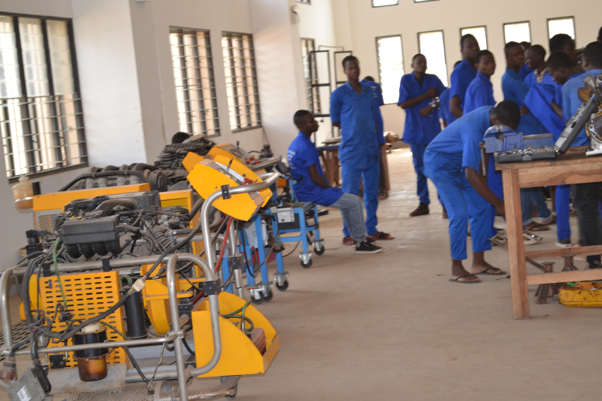
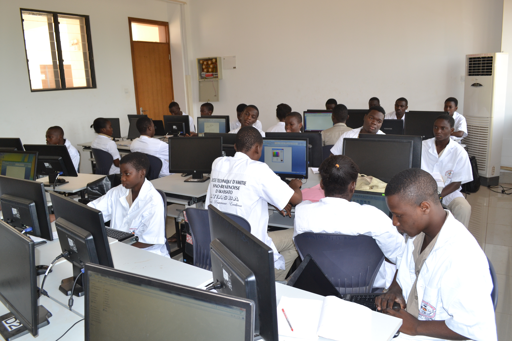
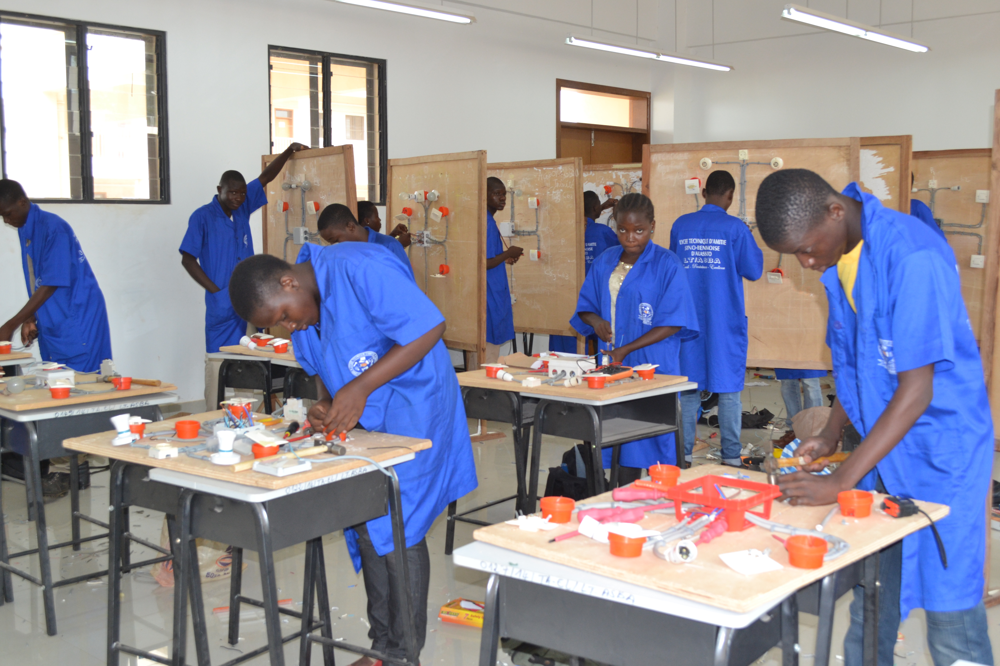

L'électricité (EL)

L’électricité est une spécialité basée sur l’éclairage domestique en générale et l’installation et la maintenance des machines électriques industrielles. C’est une filière qui intervient dans la production, la distribution et le transport d’énergie électrique a longe ou petite distance. Il intervient également des la programmation automatique d’éclairage, de sonnerie et autres….
L'électronique (F2)
 L'électronique est une branche de la physique appliquée, traitant de la mise en forme et de la gestion de signaux électriques, permettant de transmettre ou recevoir des informations. On associe souvent l'électronique à l'utilisation de faibles tensions et courants électriques. Les faibles grandeurs électriques généralement utilisées dans les applications électroniques, s'expliquent en partie par le fait que si une information peut être transmise avec peu d'énergie, il y a peu d’intérêt à la transmettre avec beaucoup.
La Coupe-Couture (CC)
La genie civil (F4)
 Le génie civil représente l'ensemble des techniques de constructions civiles. Les ingénieurs civils ou ingénieurs en génie civil s’occupent de la conception, la réalisation, l’exploitation et la réhabilitation d’ouvrages de construction et d’infrastructures dont ils assurent la gestion afin de répondre aux besoins de la société, tout en assurant la sécurité du public et la protection de l’environnement. Très variées, leurs réalisations
La Mécanique Automobile (MA)
 Les automobiles d’aujourd’hui sont des machines complexes et passionnantes. Un bon mécanicien en connaît tous les rouages. Avec notre formation complète (DEP en mécanique automobile), vous saurez tout sur la réparation des circuits électroniques et des systèmes électriques, l’entretien périodique des véhicules automobiles, l’entretien du système d’alimentation et d’injection, la mise en état de fonctionnement des moteurs, la suspension, la direction,
Installation et Maintenance en Informatique (IMI)
 Le terme « informatique » résulte de l'association du terme « information » au suffixe « -tique » signifiant « qui est propre à ». Comme adjectif, il s'applique à l'ensemble des traitements liés à l'emploi des ordinateurs et systèmes numériques. Comme substantif, il désigne les activités liées à la conception et à la mise en œuvre de ces machines. Des questions de télécommunications comme le traitement du signal ou la théorie
L'électrotechnique(F3)
 L’électrotechnique est l’ensemble des applications industrielles de l’électricité en générale. Autrement dit, l’électricité industrielle. Après trois ans d’étude au lycée, les élèves inscrits en électrotechnique doivent passer le BAC F3 afin de poursuivre les études universitaires. L’électrotechnicien est d’abord un électricien et de ce fait, il peut intervenir dans tous les domaines liés à l’électricité. Il s’agit entre autre